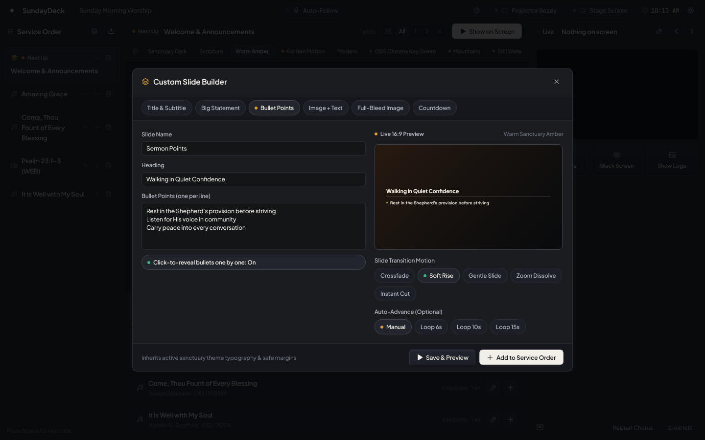

Free & Open SourceNo Licenses · Mac, Windows & Linux
Calm church slides built for real Sunday volunteers.
SundayDeck is free, lightweight presentation software made so any volunteer can sit down
ten minutes before service and run worship lyrics, Scripture, sermon slides, and
livestream lower-thirds with quiet confidence — no seat licenses, no subscriptions, no
internet required.
From pastor's notes to full sanctuary screens before the doors open.
Watch how SundayDeck moves calmly from a pastor's sermon notes to custom slide layouts,
peaceful photography and motion backgrounds, hands-free microphone auto-follow, and
bilingual worship across North and South America.
A Sunday Morning Story
Follow a volunteer from 9:45 AM to benediction.
Scroll through the morning — or click any moment — to see how SundayDeck stays calm,
predictable, and out of your way when real services change on the fly.
9:45 AM · Fifteen minutes before service
The pastor sends over the sermon notes.
Drop a PowerPoint deck, Word document, or plain outline straight into SundayDeck.
Songs link to your library, Scriptures pull cleanly offline, and every item waits in
a clear checklist for your approval before going into the service order.
9:52 AM · One last-minute announcement
Create clean slides without opening PowerPoint.
Pick a curated layout — welcome title, key quote, click-to-reveal sermon bullets,
photo + text announcement, or pre-service countdown — and choose a calm slide
transition while your sanctuary backdrop stays steady behind the words.
10:00 AM · Worship begins
Warm visuals for the room, clarity for the stage.
Project lyrics over peaceful photography or gentle looping backgrounds while your
stage monitor shows the worship team the current line, the next slide, and a quiet
countdown — and your livestream receives crisp transparent lower-thirds automatically.
10:20 AM · Spontaneous chorus & preaching
Your microphone keeps pace — completely offline.
Turn on microphone auto-follow in safe Suggest or Auto mode so slides stay with the
worship leader even when they circle back to the chorus. During the sermon, spoken
Bible verses appear in a calm one-click queue without ever hijacking the screen.
10:45 AM · One church, every generation & language
Bilingual lyrics, hymn numbers, and responsive readings.
Jump directly to hymns by book and number, display English alongside Spanish or
Portuguese on one clean slide, or project Leader and Congregation call-and-response
readings with clear visual contrast from the back pew.
Plan Importer · Ready to Review9:45 AM

Songs matched, Scriptures pulled offline, and sermon slides formatted automatically.
Included Public Domain Backdrops
Peaceful photography & looping skies — free and bundled offline.
SundayDeck ships with verified U.S. National Park Service & Wildlife Refuge Public
Domain photographs and looping motion timelapses ready for Sunday morning — click any
backdrop below to preview it live with lyrics in the booth simulator, or drop in your
own local videos and online photo URLs.
Across North & South America
Contemporary, Baptist, Catholic, Mainline, and Bilingual churches — ready out of the box.
SundayDeck welcomes churches across the Americas with Protestant and Catholic Bible
canons, instant hymnbook number lookup, native bilingual slides, and easy migration from
your existing song library.
Drive your sanctuary projector and stage confidence monitor independently, and
connect directly to OBS Studio with a transparent lower-third lyric overlay or
chroma-key theme — while private stage cues and speaker timers stay off the main screen.
Search full offline Bibles in English, Spanish, Portuguese, and French without
worrying about accents. Jump straight to hymns (BH 330,
UMH 378, HC 15, #42), toggle bilingual
lyrics in one click, or bring libraries over from EasyWorship, OpenLP, ProPresenter,
VideoPsalm, FreeShow, and SongSelect.
Try the Booth Controls
Feel how calm recovery keys are when plans change live.
Click any control below to test what the sanctuary screen does — advancing slides,
hiding words while keeping your background steady, fading gently to black, or bringing
up your church logo in one tap.
Amazing grace, how sweet the sound That saved a wretch like me
Verse 1 · Amazing Grace
Grace Fellowship
Welcome Home · Sunday Gathering
Live on Sanctuary Screen
Download SundayDeck
Free installers for Mac, Windows, and Linux.
No account sign-up, no seat licenses, and no watermark. Starts in under a second even on
modest older church laptops.
macOS (Apple Silicon & Intel)
Install in one line with Homebrew, or download the macOS installer disk image and drag SundayDeck into Applications.
brew tap OWNER/sundaydeck
brew install --cask sundaydeck
Or download SundayDeck-macOS-arm64.dmg / macOS-x86_64.dmg from Releases.
Windows (64-bit)
Standard Windows installer with Start Menu shortcut and .sdeck service bundle double-click support, or a portable zip.
SundayDeck-windows-x86_64-setup.exe
# Or portable (no install needed):
SundayDeck-windows-x86_64.zip
Linux
Debian / Ubuntu package or portable archive ready for any desktop Linux laptop in the sound booth.
sudo apt install ./sundaydeck_0.1.0_amd64.deb
# Or extract portable archive:
tar -xzf SundayDeck-linux-x86_64.tar.gz
Our Conviction
Church software should be free and fully accessible.
No seat licenses. No annual renewals. No locked features, watermarks, or forced upgrades.
Whether you are a small church plant meeting in a living room or a busy Sunday sanctuary,
every feature in SundayDeck is free forever — and we warmly welcome contributions from the
community.
100% Free — No Licenses Required
Install SundayDeck on as many sanctuary laptops, volunteer practice machines, and booth
computers as your church needs. No activation keys, no subscriptions, and no accounts.
Built Together, Open to Contributions
SundayDeck is open source and shaped by real churches. Bug reports, Spanish, Portuguese,
and French translations, public-domain starter packs, usability feedback, and pull
requests are always welcome.
How You Can Help
Try SundayDeck with your volunteers, share what felt confusing ten minutes before
service, contribute a translation or improvement on GitHub, or pass it along to a
neighboring church that cannot afford paid presentation software.
Join & Support the Movement (Optional)
Keep SundayDeck free for every church.
Every feature stays 100% free with zero paywalls, forever. If SundayDeck serves your
congregation well, you can chip in a coffee or sponsor ongoing development — helping
cover Mac and Windows code-signing certificates, release hosting, and starter packs
for smaller churches.